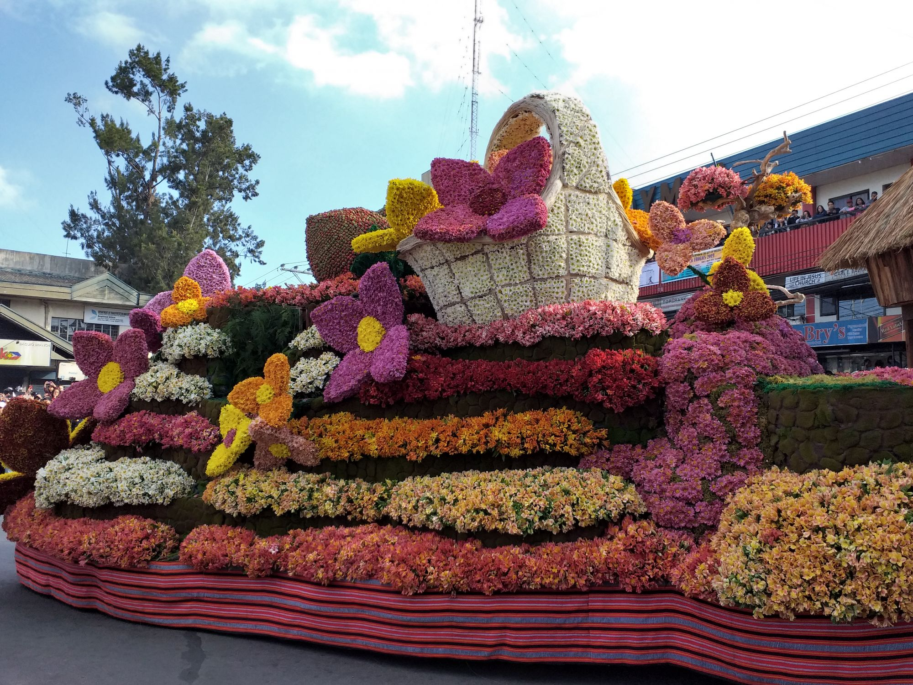
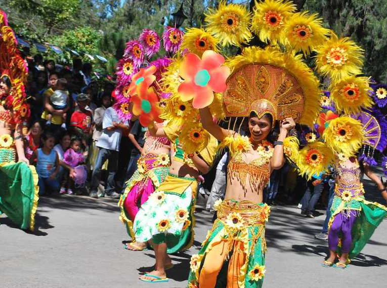
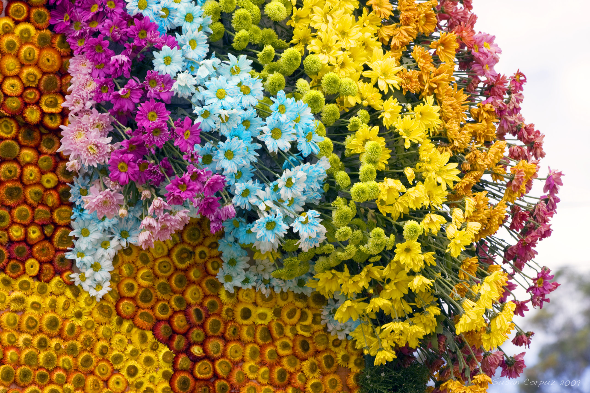

Baguio City's Flower Festival
Panagbenga Festival started in 1995 in Baguio City to celebrate the city's flowers and recovery after the 1990 earthquake. The word “Panagbenga” means “season of blooming.”


